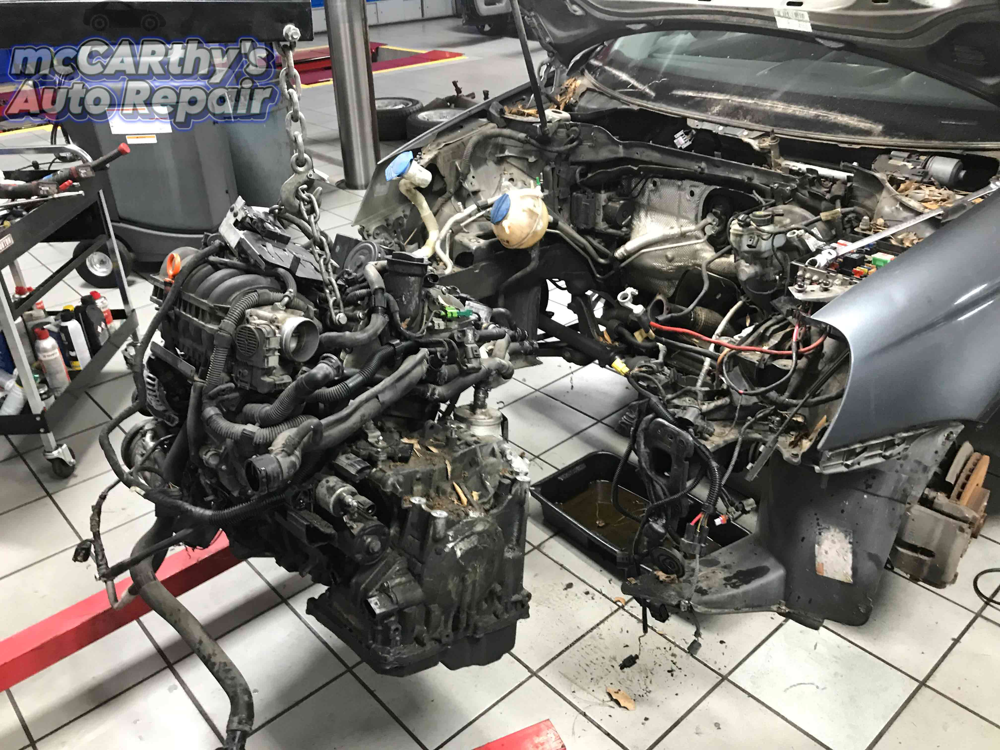
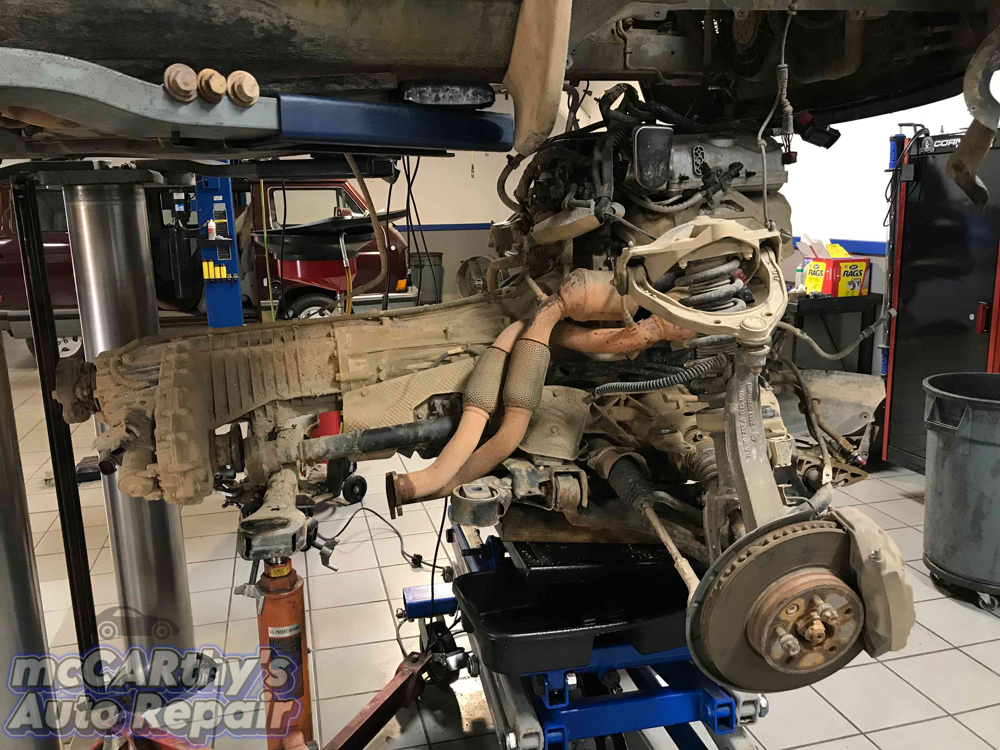
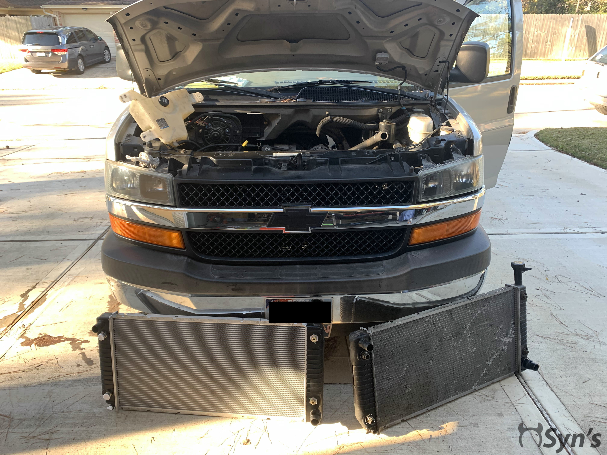
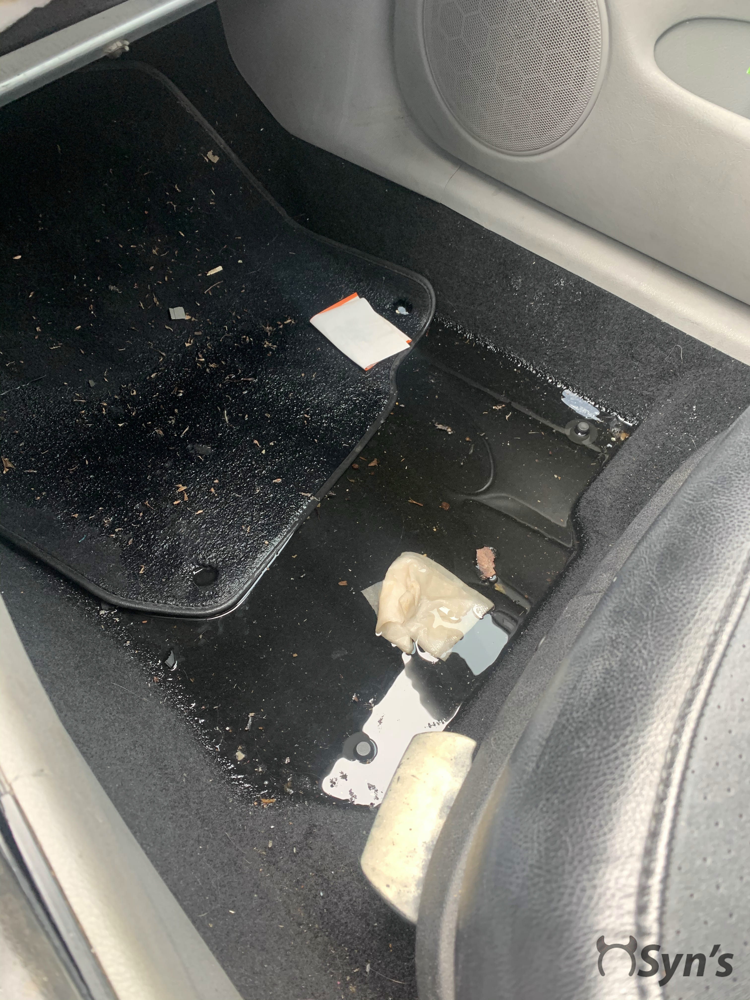
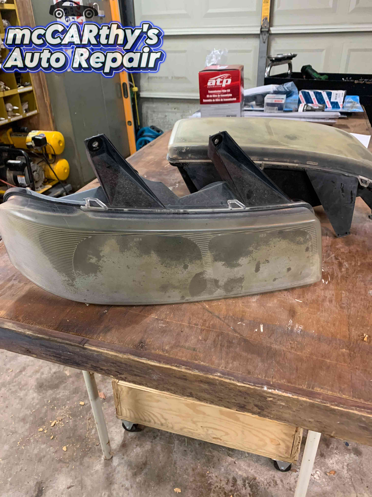
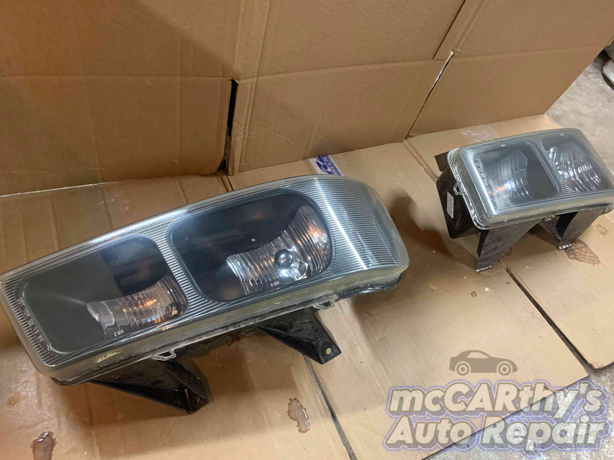
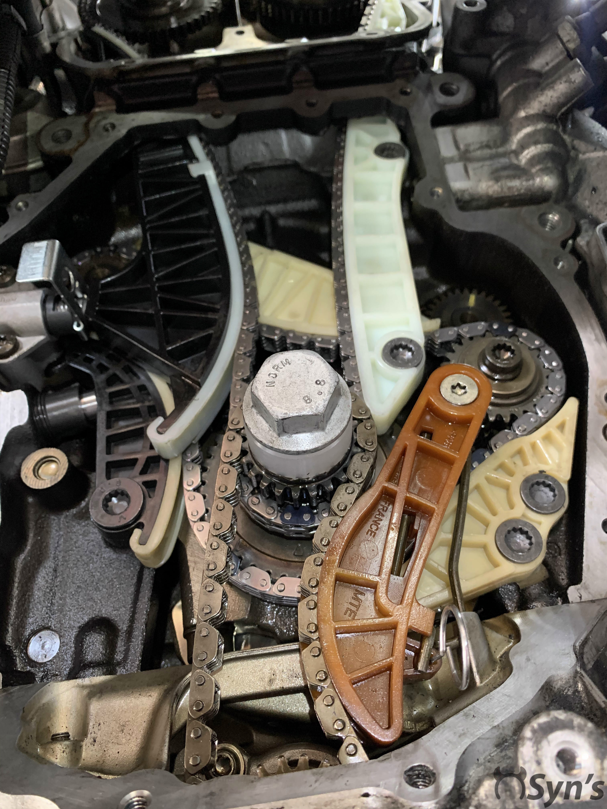
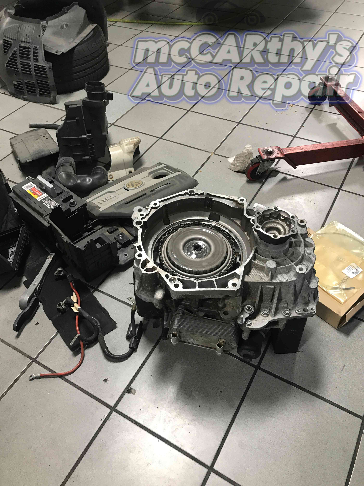
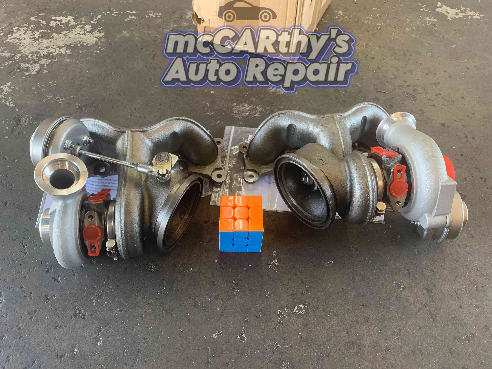

All images shown below were taken by me personally, accumulated through the years of working at different dealerships/independent shops.
Click an image to view full size.

Engine and transmission removal on a Volkswagen Jetta
These inline 5 cylinder engines are some of the most reliable VW engines made to date. Unfortunately for this one, the maintenance schedule was neglected entirely, damaging the engine beyond repair. A compression and subsequent leak down test showed significant loss of compression past the rings, on multiple cylinders. The valves were left intact. After some checking online, it was decided that it would be less expensive for the customer to simply replace the engine instead of repair.

Engine and transmission removal on a Volkswagen Touareg
The customer brought their vehicle in because of a "whip cracking" sound that started suddenly one morning before they left for work. The plastic parts of the timing chain guides had failed, simultaneously allowing metal on metal friction at high speed and creating excess slack in the valvetrain. Unfortunately for these engines, the timing chain is located between the engine and transmission. If you own one of these, I'm truly sorry. I'll still fix it for you though.

Coolant leak from the radiator
This is actually a family member's van. Was leaving a small puddle in the driveway. After confirming the leak with a pressure test, the radiator was replaced along with the coolant hoses, as they were factory original as well.

Water leak from rain after collision
This customer had a minor collision accident that allowed water to leak in when raining. The carpet needed to be fully removed, dried, and cleaned. The collision area near the passenger door/quarter panel was also repaired.


Headlight restoration
Before and after of a headlight restoration from a Chevy van. According to the customer, WD-40 was applied to them in an attempt to clear the growing haze. That definitely didn't help. I sanded them, starting from a 240 grit and ending with a 3000 grit. Then compounded with some of the good stuff from 3M. After that, they were clear coated to protect the shine. All of this, parts and labor included, was done for only $25 per headlight.

Volkswagen timing chain
Vehicle came in with a check engine light, still running. These inline 4 cylinder engines from VW are known for timing chain stretch and tensioner failure. The plastic guides are also known to crack and break. Multiple TSB's have been released for this problem. I've also bought all special tools needed for this job. That small white plastic bushing is actually part of a kit and does not stay in the engine. It holds the timing and oil pump sprockets to the crankshaft while the timing cover is placed on, and is removed after. After being placed, the timing cover has a small tab that will hold the sprockets while the harmonic balancer is bolted on, securing this section of the valvetrain. The tensioner has also been updated.

Volkswagen DSG transmission
This DSG (dual-shaft gearbox) transmission needed new clutch packs. The vehicle was still drivable but had a fault stored due to the worn out clutches. The transmission fluid was never changed, so thankfully the vehicle was back on the road after only the clutch pack replacements. If you never change your fluid, the gears themselves will eventually wear out, leading to much more expensive repairs. The adaptations and faults were cleared, and the vehicle was deemed road ready after test driving with the scan tool connected.

BMW Twin Turbos
These brand new turbos went into a BMW N54 engine. An aftermarket replacement for stock power, at a far lower price point. The original stock turbos were starved of oil and ruined. The cams/uppper valvetrain was also inspected and found no extra wear. The E90 335i was back on the road in no time.